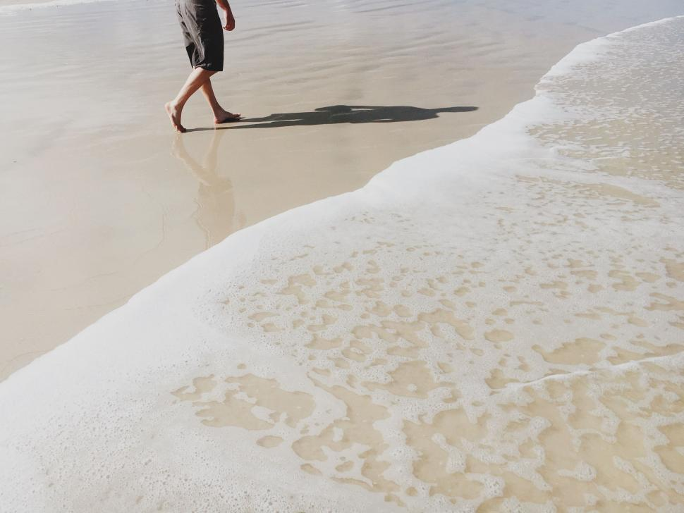

Creative Spotlight is a monthly feature by My Miyakojima — thoughtfully selecting people, places, and stories that reflect the true heart of the island.
クリエイティブ・スポットライトは、 My Miyakojimaが毎月ご紹介する特集です。 宮古島の本質や魅力を映す人や場所、ストーリーを大切に選んでいます。

A Miyakojima-based singer-songwriter whose music, live performances, and beach clean work are rooted in island life.
音楽、ライブ、ビーチクリーンを通して宮古島と深くつながるシンガーソングライター。
A calm, light-filled salon in Miyakojima known for natural highlights and a welcoming atmosphere.
自然なハイライトと心地よい空間が魅力の、宮古島のサロンです。
Inspired by the ocean of Miyakojima, Blu Pantu creates symbolic blue forms rooted in island mythology.
宮古島の海にインスピレーションを受け、島の神話をもとにした青い作品を制作しています。
A visual artist whose years in Miyakojima continue to quietly shape her creative expression.
宮古島で過ごした年月が、今もなお彼女の創作に静かに影響を与え続けています。
Request a Feature 特集掲載のご相談
Creative Spotlight is a curated monthly feature highlighting people connected to Miyakojima.
クリエイティブ・スポットライトは、 宮古島にゆかりのある方々をご紹介する月ごとの特集です。
If you’re interested in being featured, feel free to reach out.
掲載をご希望の方は、お気軽にご相談ください。
Message on Instagram Instagramで相談する